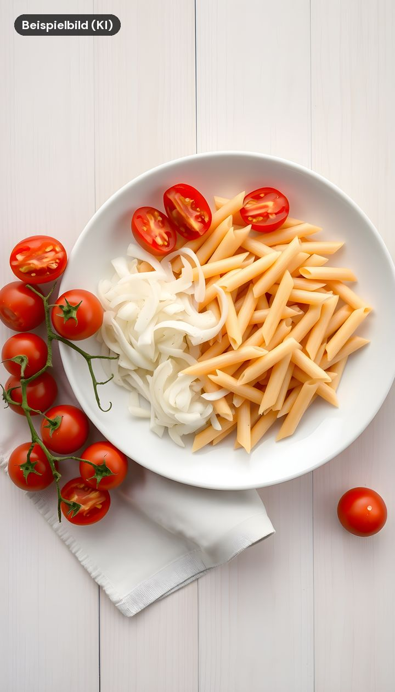
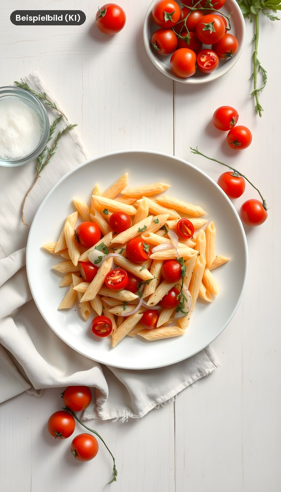
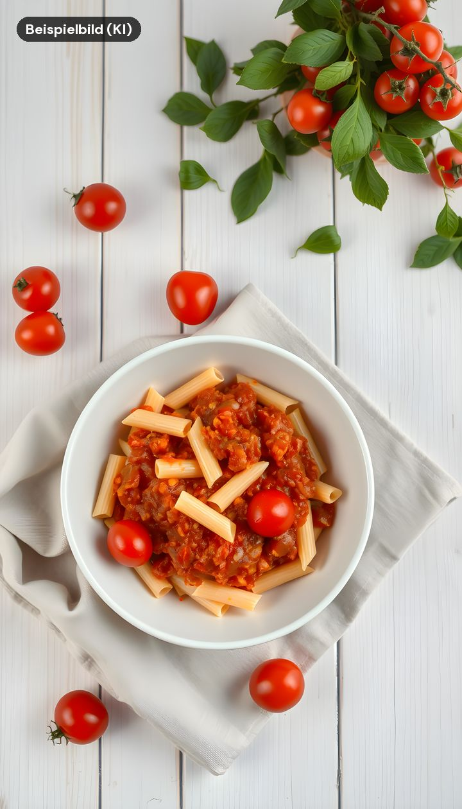
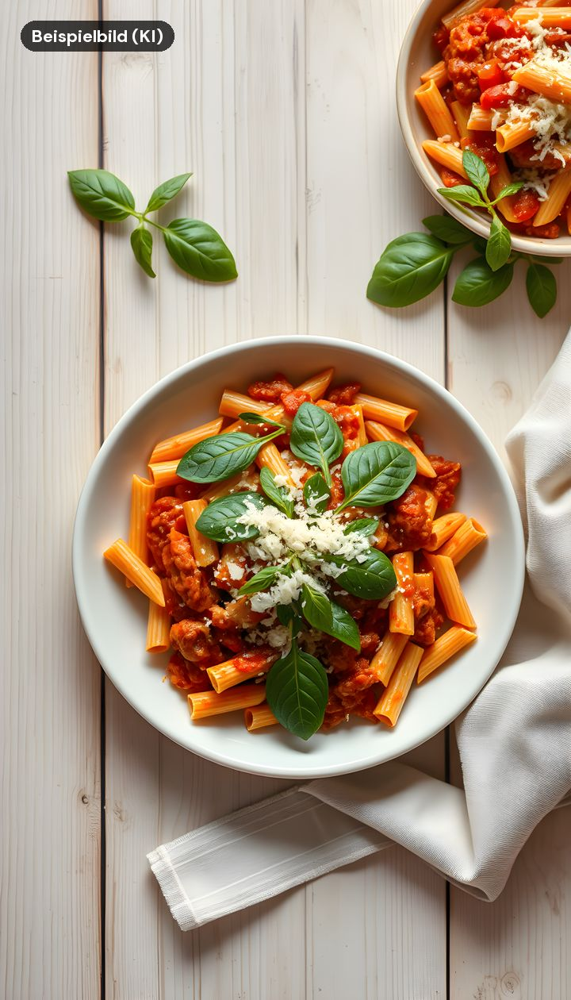

Keine Ernährungs- oder medizinische Beratung. Allergene und Unverträglichkeiten beachten.
Zutaten für 2 Portionen
200 gPenne
250 gKirschtomaten
1Zwiebel
2Knoblauchzehen
1 ELOlivenöl
1 TLgetrockneter Oregano
500 mlWasser
2 HandvollBabyspinat
40 gParmesan
nach GeschmackSalz und Pfeffer
Allergene: Gluten, Milch.
Zubereitung
Schritt 1: Zutaten vorbereiten
Halbiere die Tomaten, schneide die Zwiebel in dünne Streifen und hacke den Knoblauch fein.

KI-generiertes Beispielbild: so kann Schritt 1 aussehen, kein Foto eines eigenen Ergebnisses
Schritt 2: Alles in den Topf
Gib Nudeln, Tomaten, Zwiebel, Knoblauch, Öl, Oregano, Salz und das Wasser in einen weiten Topf und bringe alles zum Kochen.

KI-generiertes Beispielbild: so kann Schritt 2 aussehen, kein Foto eines eigenen Ergebnisses
Schritt 3: Garen und rühren
Lass die Nudeln 10 bis 12 Minuten offen köcheln und rühre oft um, bis das Wasser fast verkocht ist.

KI-generiertes Beispielbild: so kann Schritt 3 aussehen, kein Foto eines eigenen Ergebnisses
Schritt 4: Spinat und Käse
Hebe den Spinat unter, bis er zusammenfällt. Streue den geriebenen Parmesan darüber und pfeffere nach Geschmack.

KI-generiertes Beispielbild: so kann Schritt 4 aussehen, kein Foto eines eigenen Ergebnisses
Tipp und Variante
Tipp: Nimm einen weiten Topf, damit die Nudeln flach liegen und gleichmäßig garen. Rühre öfter um, dann klebt nichts am Boden.
Variante: Mit Zucchini oder gelber Paprika statt Spinat bekommt das Gericht mehr Farbe.
Hinweise
Allergene: Gluten, Milch.
Prüfe bei Allergien und Unverträglichkeiten immer die Zutatenlisten der Packungen.
Alle Bilder auf dieser Seite sind KI-generierte Beispielbilder und im Bild als „Beispielbild (KI)“ gekennzeichnet. Wie sie entstehen, steht im KI-Hinweis.
Keine Ernährungs- oder medizinische Beratung. Allergene und Unverträglichkeiten beachten.